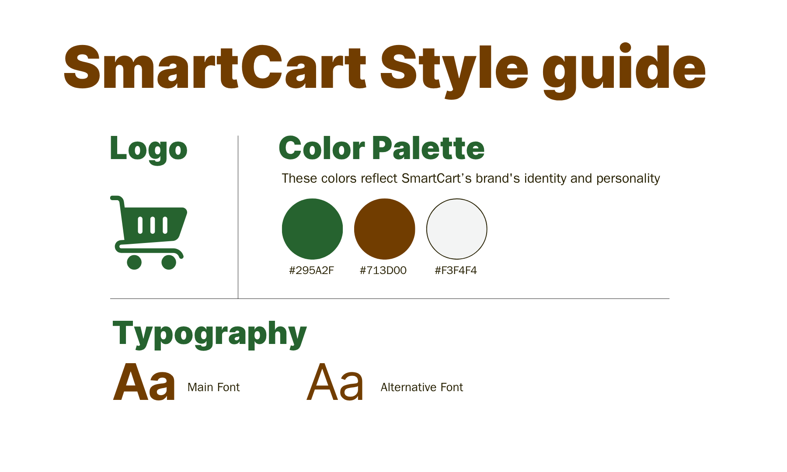

SmartCart Kiosk
User Research · UI/UX Design · Usability Testing
SmartCart is a prototype for an in-store grocery kiosk designed to reduce decision fatigue and improve the shopping experience. By incorporating meal planning suggestions, item locators, and nutritional info, the tool helps streamline grocery runs and reduce the time spent searching or deciding.
What I Did
- Conducted field and user research to uncover shopper pain points and build user personas
- Designed both low and high-fidelity flows using Figma
- Ran 3 rounds of user testing, reducing average navigation time by 51%
- Enhanced interface visibility and auto-reset behavior based on real-time user feedback
Tools Used
Figma, Adobe Creative Cloud
